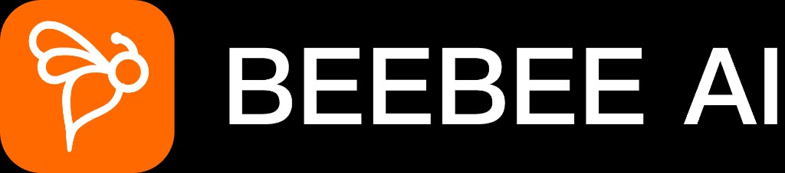
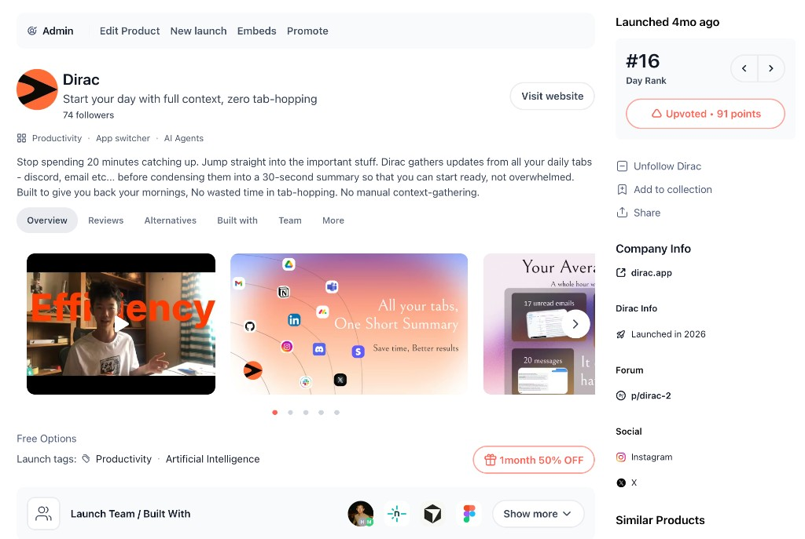

A practical playbook grounded in how PH actually works
一份基于 PH 真实运作方式的实战手册
Everything in this lesson is grounded in what actually worked — and what I'd do differently next time.

本课所有内容均源于亲身实践——以及我下次会改进的地方。
Every product starts at zero. The clock resets at 12:01am PST — you compete only with that day's launches.
Early upvote speed matters more than raw totals. A strong first-hour burst tells the algorithm you're worth surfacing.
Thoughtful comments outweigh numbers. Engagement depth is a ranking signal — drive conversations, not just votes.
每个产品从零开始。时钟在 PST 凌晨 12:01 重置 — 只与当天发布的产品竞争。
早期点赞速度比总量更重要。强劲的开局让算法认为你值得推广。
有深度的评论比数量更有价值。互动深度是排名信号 — 要引发对话，不只是点赞。
Never feature-led. Under 60 characters. Pick one angle: benefit, problem, or unique POV — and own it.
Bold, high-contrast, readable at small size. Test at 60×60px. No walls of text. One clear visual hook.
Completely valid in 2024+. PH reduced hunter algorithm weight. Your own network and listing quality matter more. No dependencies, full control.
Helpful if they have 10K+ PH followers and are genuinely excited about your product. Their audience must be relevant to yours.
2024年完全可行。PH 已降低 Hunter 的算法权重。你自己的网络和产品页质量更重要。没有依赖，完全掌控。
仅在对方有 1 万+ PH 粉丝且真心喜欢你产品时才有帮助。受众必须与你相关。
| Mistake | Why it hurts | Risk Level |
|---|---|---|
| Vote rings / coordinated upvoting | PH detects it — listing gets downranked or removed silently | Critical |
| Launching a half-finished product | PH community is brutally honest — bad comments compound and damage brand | High |
| Ignoring comments on launch day | Kills engagement signal; community reads it as founder not caring | High |
| Bad timing (Friday / weekend) | Lower traffic, less editorial attention, weaker audience quality | Medium |
| Over-promising in the tagline | Sets expectations that can't be met — negative comments follow | Medium |
| "Launched and disappeared" | Misses 48-hour long tail traffic and all post-launch value extraction | Medium |
| 错误 | 为何有害 | 风险等级 |
|---|---|---|
| 刷票圈 / 协调投票 | PH 能识别 — 产品页被悄悄降权或删除 | 严重 |
| 发布未完成的产品 | PH 社区极其诚实 — 差评会累积并损害品牌 | 高 |
| 发布日忽略评论 | 扼杀互动信号；社区认为创始人不在乎 | 高 |
| 时机选择差（周五/周末） | 流量低，编辑关注少，受众质量差 | 中 |
| 在标语中过度承诺 | 设置无法实现的预期 — 随之而来的是负面评论 | 中 |
| "发布后消失" | 错过 48 小时长尾流量和所有发布后价值 | 中 |